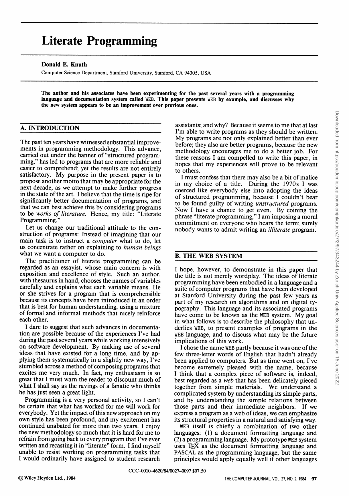
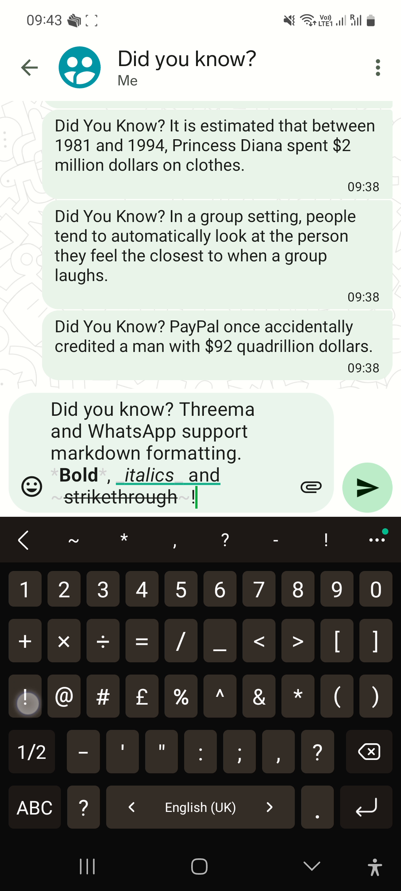
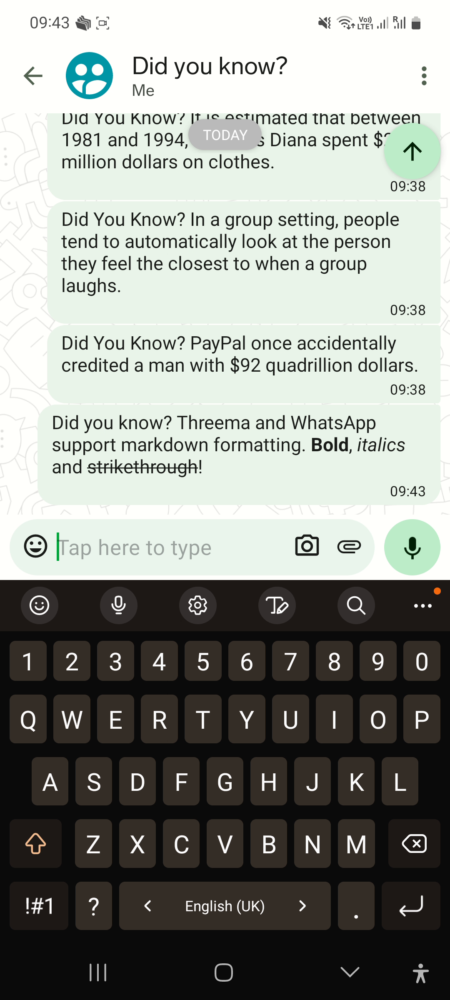

Reproducible and Publicly Visible Data Analysis
2024-03-05
Today
1 Reproducibility in Data Science
I believe history will see RMarkdown as a turning point in the replication crisis.
Lack of reproducibility
is a problem
Quarto, Git & GitHub are
(part of) the solution
2 Literate Programming and Quarto
When was the last time you spent a pleasant evening in a comfortable chair, reading a good R Script?
– Adapted from John Bentley (1986) “Communications of the ACM”
content
Donald Knuth 1984

Donald Knuth 1984

I’ve stumbled across a method of composing programs that excites me very much.
Let us change our traditional attitude to the construction of programs:
Instead of imagining that our main task is to instruct a computer what to do, let us concentrate rather on explaining to human beings what we want a computer to do.
Exercise: Literate Programing üõ†Ô∏è
Make your R-Script literate
- Download the Folder
GOT.zipfrom moodle (Game of Thrones Dataset) - Unzip the File in a reasonable location
- Open the .RProj File with RStudio
- Run the RScript got-1.R and try to undestand what is happening
- Make the R-Script literate by explaining to human beings what we want a computer to do
3 Markdown
Why Markdown?
What is Markdown?
- A Lightweight markup language
- Easy to learn
- Machine readable and human readable
Markdown Syntax
A story of a fox
The quick brown fox jumps over the lazy dog.
Markdown exercise üõ†Ô∏è
- Grab your smartphone (if you have one)
- Open your favorite messenger: Threema, Telegram or WhatsApp (not Signal)
- Send the following text message to your favorite geek:
Threema / WhatsApp:


If that was Markdown, what’s Markup?
- Markup is a generic term for a language which structures text in a machine readable way (use of tags / symbols)
- Markdown is a markup language
- Other markup languages include: HTML and LaTeX
- Here is an example of making bold text
- Markdown:
**Hello World**
- HTML:
<b>Hello World</b>
- LaTeX:
\textbf{Hello World}
- Markdown:
4 Quarto
What is Quarto?
- Combines Markdown with R to generate Documents
- Also works with Python, Julia…
- Can create PDFs, Websites, Books or Slides of your data analysis
- Is OpenSource
- Is used via the commandline / terminal
- Workflow: 
Quarto Exercise 1 üõ†Ô∏è
Check if quarto is installed by running the following command in your terminal:
install quarto if necessary (➲ quarto.org)
Quarto Exercise 2 üõ†Ô∏è
Create a new Quarto file
- Remove the checkbox Use visual markdown editor
- Click on Create empty document
Save as
got-2.qmdWrite some prose on the analysis done in
got-1.R(no R code yet)Render the file to html by running the following code in your terminal
Quarto Exercise 3 üõ†Ô∏è
Quarto Exercise 4 üõ†Ô∏è
- Markdown talks to humans
- R Code talks to humans & the computer
- Let’s add the R-Code from
got-1.Rwith Ctrl+Alt+i - This adds a “fence” where we can add R-Code
- Add the R-Code from
got-1.Rinto the code block - Check your updated preview
YAML Header
YAML Header Exercise 1 üõ†Ô∏è
- Add metadata to your markdown file using YAML headers
- Regard the output (
quarto preview)
YAML Header Exercise 2 üõ†Ô∏è
- Add a format specification to your YAML header: Either
typst(recommended) orpdf - This renders your file to pdf
- If you use
pdf, you might need to installtinytext(see message in terminal)
Exercise YAML Header 3 üõ†Ô∏è
5 Publishing HTML / Websites
Publishing HTML Files
- HTML can be shared publicly by creating a website
- Some options:
- RPubs
- QuartoPub
- GitHub Pages
- Netlify
Exercise Publish HTML with RPubs üõ†Ô∏è
- Create a new account on rpubs.com
- Click on the Blue Publish Button on the Top right of your script
- Choose RPubs
- Click on Publish
6 Quarto Advanced
Quarto Advanced Exercise 1 üõ†Ô∏è
- Insert one of the images included in your folder into your document
- (quarto.org → Guide → Authoring → Figures)
Quarto Advanced Exercise 2 üõ†Ô∏è
- Insert an cross-reference to this image. E.G: see Figure 1
- (quarto.org → Guide → Authoring → Scholarly Writing → Cross-References)
Quarto Advanced Exercise 3 üõ†Ô∏è
- Insert a crossreference to a chapter eg see Section 6.3
- (quarto.org → Guide → Authoring → Scholarly Writing → Cross-References)
Quarto Advanced Exercise 4 üõ†
- In Quarto, figures can consist of subfigures
- See: quarto.org → Guide → Authoring → Figures → Subfigures
- Creates a subfigure layout similar to the following:
Quarto Advanced Exercise 5 üõ†
- Add a caption and a cross reference to your
ggplot-figure
Quarto Advanced Exercise 6 üõ†
- Display a table with the top 10 characters in regard to screentime, displaying only the columns
name,screentimeandepisodes. - Reference this table in your text
- Add a caption to your table
- quarto.org → Guide → Authoring → Tables → Cross References
- Hint: use
knitr::kable()
Quarto Advanced Exercise 7 üõ†
- Add a (dummy) abstract
- Make sure this abstract is not numbered and not in the TOC
- quarto.org → Guide → Documents → HTML → HTML Basics
Quarto Advanced Exercise 8 üõ†
Let’s add a citation!
- Got to scholar.google.com
- Get the bibtex entry of a scientific paper
- Create a new text file named
bibliography.bib - Add the bibtex entry to this file
- Include the file in the YAML header:
bibliography: bibliography.bib - Now you can reference this entry using:
@knuth1984for Knuth (1984)see [@knuth1984]for see (Knuth 1984)
- For more information see quarto.org → Guide → Authoring → Scholarly Writing → Citations
- To include Zotero, see quarto.org → Guide → Tools → RStudio IDE → Visual Editor → Technical Writing → Citations → Citations from Zotero
7 Versioncontrol with Git and GitHub
GIT LETS YOU TELL THE STORY OF YOUR PROJECT
You use Git to take snapshots of all the files in a folder.
This folder is called a repository or repo.
When you want to take a snapshot of a file or files, you create a commit

Convinced?
Want to learn Git?
→ Do the optional exercises on computationalmovementanalysis.github.io
(Week 3 → Exercise A and Exercise B)